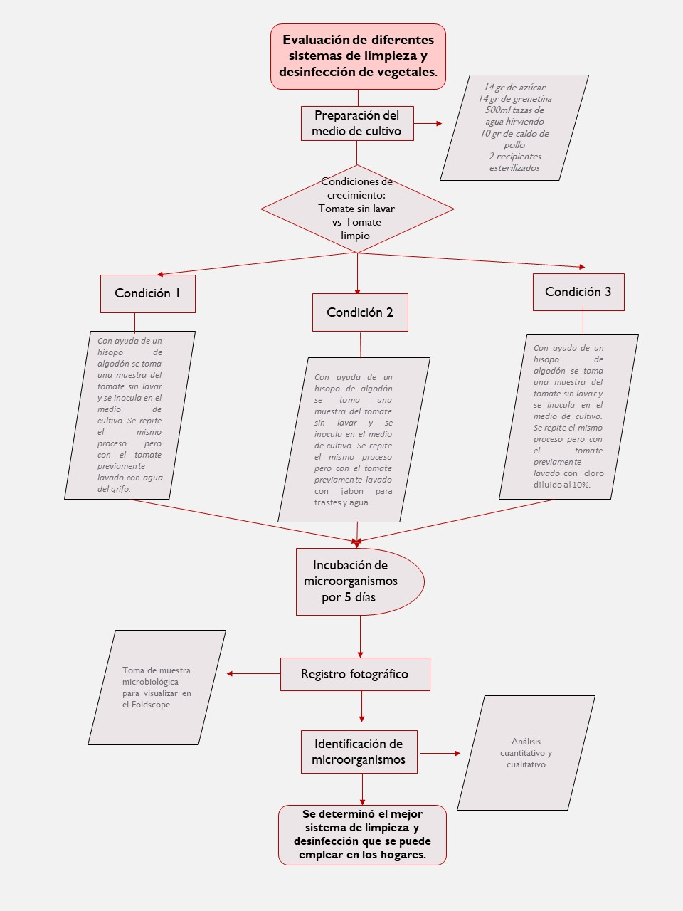

Los alimentos pueden transmitir más de 200 enferedades.
Para la evaluación de la eficiencia de los 3 diferentes métodos de vegetales, en este caso tomate, se tomo una muestra antes de someterla al proceso y se inoculo en el medio de cultivo, revisando el crecimiento de colonias en un periodo de 5 días, el resultado se comparó con el número de colonias que crecieron en el medio inoculado con una muestra de la hortaliza después de lavarla.

Los alimentos pueden transmitir más de 200 enferedades.

Las enfermedades diarreicas afectan cada año a unos 220 millones de niños, de los que 96,000 acaban muriendo.

Los alimentos como el maíz o cereales pueden contener elevados niveles de aflatoxina y ocratoxina, producidas por el moho presente en el grano, que pueden afectar al sistema inmune.